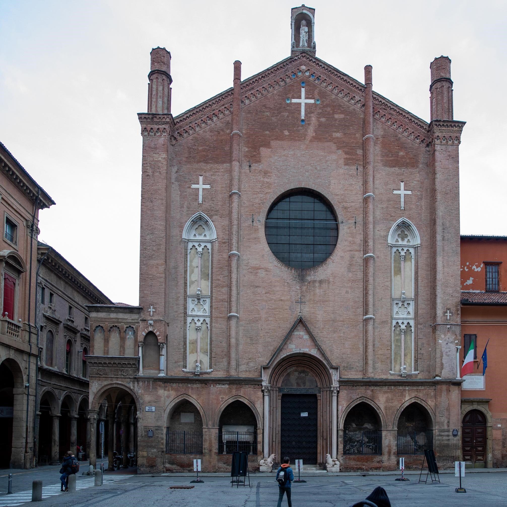
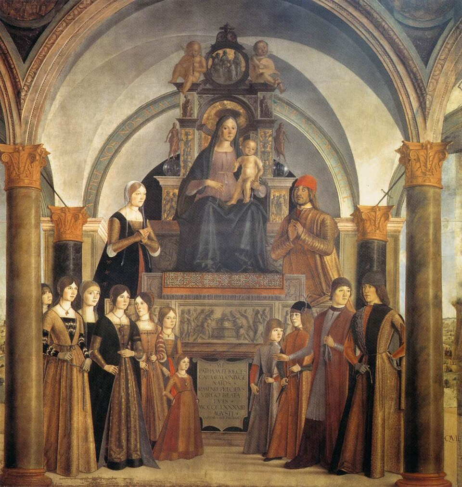
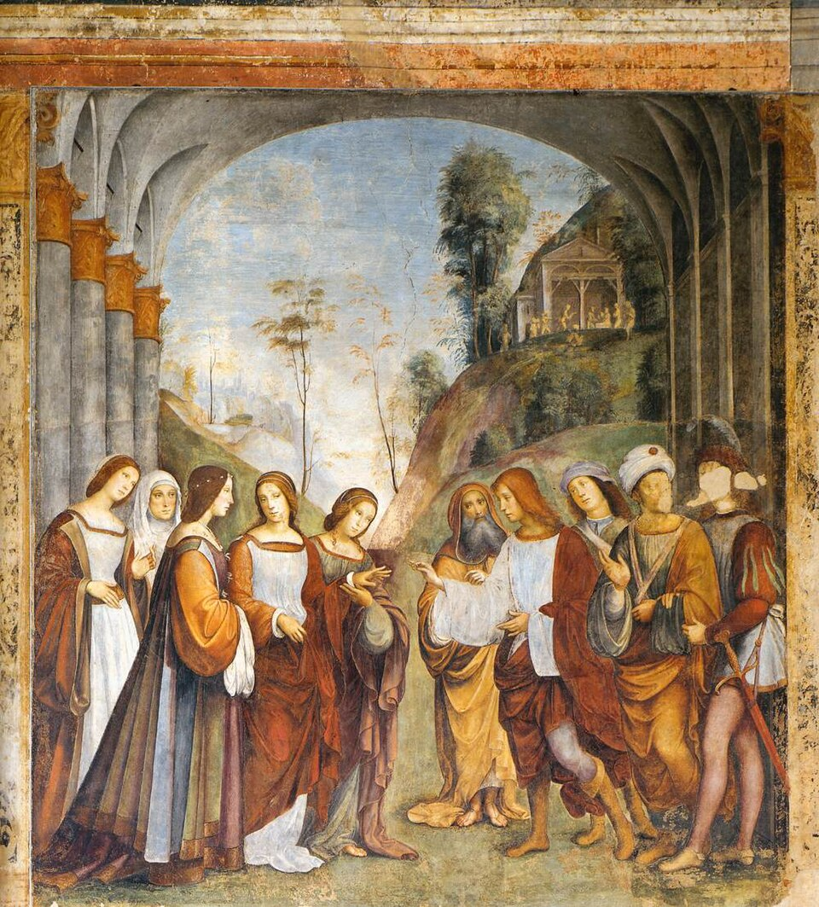

Basilica di San Giacomo Maggiore
Mausoleo e "pantheon" religioso della famiglia Bentivoglio

Descrizione dell'Item
La Basilica di San Giacomo Maggiore, fondata nel 1263 dagli Agostiniani, costituisce uno dei monumenti cardine del Rinascimento bolognese. Sotto il regnato di Giovanni II Bentivoglio, la chiesa venne trasformata nel tempio di rappresentanza della casata, arricchendosi del celebre portico rinascimentale esterno (1477–1481) e della monumentale Cappella Bentivoglio (1486–1498), concepita come vero e proprio mausoleo dinastico.
All'interno della cappella gentilizia si conservano capolavori assoluti commissionati dalla signoria: la grandiosa Pala Bentivoglio e gli affreschi allegorici di Lorenzo Costa, la pala d'altare e il monumento sepolcrale di Annibale I Bentivoglio. Il complesso incarna visivamente la sintesi tra mecenatismo artistico, devozione religiosa e auto-celebrazione del potere bentivolesco.
Metadati Descrittivi (Dublin Core)
| Identificativo ID | IT09 |
|---|---|
| Titolo | Basilica di San Giacomo Maggiore |
| Committente | Giovanni II Bentivoglio Committente delle trasformazioni rinascimentali |
| Datazione | 1263 (Fondazione) / 1460–1498 (Fase Bentivolesca) |
| Tipologia & Architettura | Architettura / Architettura religiosa e Cappella Gentilizia
Tipo oggetto: Architecture Getty AAT |
| Materia e Tecnica | Muratura in laterizio, marmo scultoreo |
| Localizzazione | Piazza Gioacchino Rossini, Bologna, Italia |
| Soggetti / Temi | San Giacomo Maggiore, Cappella Bentivoglio, Lorenzo Costa, Architettura del Rinascimento, Mecenatismo Bentivoglio |
| Collezione & Licenza |
Collezione: La Bologna Bentivolesca (1463–1506) Diritti: Pubblico dominio / CC BY 4.0 (Dati) |
Codifica SORGENTE (XML / Dublin Core)
Scarica XML DCDi seguito viene mostrata la codifica semantica in formato XML-Dublin Core associata a questo item del catalogo:
<?xml version="1.0" encoding="UTF-8"?>
<metadata
xmlns:dc="http://purl.org/dc/elements/1.1/"
xmlns:dcterms="http://purl.org/dc/terms/"
xmlns:xsi="http://www.w3.org/2001/XMLSchema-instance"
xsi:schemaLocation="
http://purl.org/dc/elements/1.1/ https://dublincore.org/schemas/xmls/qdc/2008/02/11/dc.xsd
http://purl.org/dc/terms/ https://dublincore.org/schemas/xmls/qdc/2008/02/11/dcterms.xsd">
<dc:identifier>IT09</dc:identifier>
<dc:title>Basilica di San Giacomo Maggiore e Cappella Bentivoglio</dc:title>
<dc:creator>Ordine degli Eremitani di Sant'Agostino</dc:creator>
<dc:contributor>Giovanni II Bentivoglio (Committente)</dc:contributor>
<dc:subject>Basilica di San Giacomo Maggiore</dc:subject>
<dc:subject>Cappella Bentivoglio</dc:subject>
<dc:subject>Lorenzo Costa</dc:subject>
<dc:subject>Francesco Francia</dc:subject>
<dc:subject>Architettura rinascimentale bolognese</dc:subject>
<dc:description>Complesso monumentale agostiniano divenuto il mausoleo della famiglia Bentivoglio. Ospita la Cappella gentilizia con capolavori di Lorenzo Costa e Francesco Francia.</dc:description>
<dc:publisher>Diocesi di Bologna / Ordine Agostiniano</dc:publisher>
<dc:date>1263-1498</dc:date>
<dc:type>Architecture</dc:type>
<dc:format>Edificio monumentale e cappella gentilizia</dc:format>
<dc:source>Piazza Giuseppe Verdi, Bologna, Italia</dc:source>
<dc:language>ita</dc:language>
<dc:coverage>Bologna, XIII-XV secolo</dc:coverage>
<dc:rights>Pubblico Dominio</dc:rights>
<dcterms:license>https://creativecommons.org/licenses/by/4.0/</dcterms:license>
</metadata>Connessioni di Rete
- promosso da Giovanni II Bentivoglio
- decorato da Lorenzo Costa & Francesco Francia
- luogo di sepoltura Dinastia Bentivoglio
Item Correlati

Pala Bentivoglio
Opera conservata all'interno della basilica